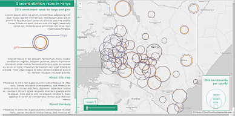
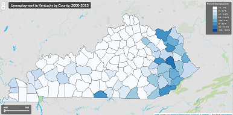
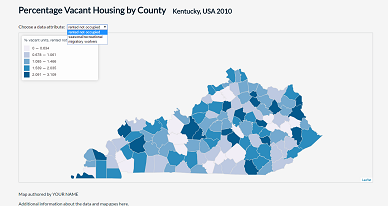

Amber J. Bosse | Map Portfolio
showcasing work completed during New Maps Plus courses
This is the online map portfolio of Amber J. Bosse , PhD student at the University of Kentucky Department of Geography and student in the New Maps Plus (NMP) online certificate program. This page showcases the work she has done throughout two courses in the NMP program- MAP 672: Programming for Web Mapping and MAP 673: Design for Interactive Web Mapping. More specifically, the portfolio shows a trajectory of how far she has come over the course of five months, beginning with her most recent work (the final project for MAP 673) and working backwards to some of her first, most simple though foundational, maps from MAP 672.

This map served as her final project for MAP 673. The objective of this final assignment was to create a web map from "scratch," requiring students to synthesize the range of technical skillsets acquired throughout the course to create a web map that was novel and intuitive for users. Amber choose to map a dataset from the American Community Survey showing marital status. In doing so, she used radio buttons to allow users to switch between data layers, in addition to a slider bar to move users through different age categories for each later. The final piece of interactivity is an informational popup box that appears upon mousing over a county
- See the full map here.
- See the code behind it all here.

This map was developed throughout Modules 04 and 05 in MAP 673. These modules offered focused on the user experience and building web-maps from a position of user-centered design. Additionally, these lessons trained students on the practice of developing a wireframe mockup and how to "wrangle" raw data into a format that will allow it to most easily be used in a web-map. Taken together, this pair of intensive labs pushed students to become more than simple button pushers, and instead encourged them to dive deep into the conceptual understanding of web-mapping practices.
- See the full map here.
- See the code behind it all here.

This map was developed throughout Modules 03 in MAP 673. This lesson explored how to make multiple asynchronous HTTP requests to load geometry and data onto the map as separate reqquests. By building a series of nested looping structures, Amber was able to then bind attribute data to geometries to create this choropleth map. This allows map files to be smaller and, therefore, more responsive. So while this map looks like other maps of Kentucky Amber has made throughout these two courses, the techniques behind it are more advanced.This also shows Amber's first time with building a UI slider.
- See the full map here.
- See the code behind it all here.

This map was developed in Module 02 of MAP 673 and was Amber's first experience for allowing a UI for the updating the map. In this case, the lesson outlined how to create an effective dropdown menu which offers different data layers. Such interaction requires that the legend also be redrawn with each chosen layer. By creating an "empty" legend, Amber was able to update classification breaks and assign colors based on what layer was selected in the dropdown menu.
- See the full map here. Feel free to spend some and click around.
- See the code behind it all here.

This map is one of the final maps created in MAP 672. While may not seem like much more than a bunch of pretty colored circles, in order to make this map she had to pull on on the concepts she had learned in the previous 8 module of this course. This includes looping, conditional statements, functions, objects, methods, and working with GeoJSON format and JavaScript's Leaflet library. Leaflet specific skills include using pointToLayer functions to create circle markers, filtering the javascript file to only show certain attributes of the data, and adding event listeners.
- See the full map here. Feel free to spend some and click around.
- See the code behind it all here.

Amber's first "homemade" web-map is a product of the module 03 of MAP 672. In order to make this map, she first had to learn a number of basic concepts regarding Javascript. Concepts include understanding values and types, using expression operators, and both creating and calling on variables and arrays. Even before being able to make this simple web-map, she had to learn how to use Github and Brackets to access and edit HTML documents.
- See the full map, in all its glory here.
- See the code behind it all here.
- Contact Information for Amber J. Bosse | email: amber.j.bosse@uky.edu | twitter: @mapbosse